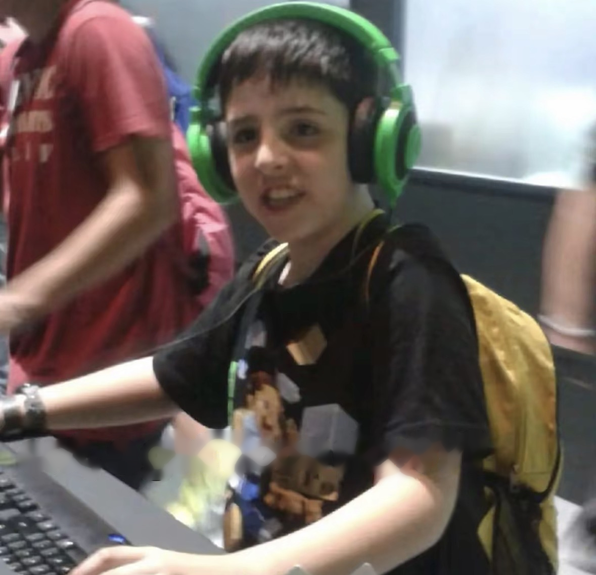

Bem-vindo ao Save Room!
A paixão por videogames é algo que, para muitas pessoas, floresce desde a infância. Exemplos como o Playstation 2 ou o Super Nintendo estiveram presentes na infância de diversas gerações, trazendo esse hobby da infância para a vida. Com o passar dos anos, o jogador acumula diversos jogos em diferentes plataformas, e as lembranças de cada jornada ficam presas apenas em sua mente. Pensando nisso e trazendo essa paixão, foi criado um site de uso pessoal, uma central de ferramentas para os jogos que tanto amo, como, por exemplo, uma página para visualizar pokémons na pokedex, um guia para as canções de ocarina em The Legend of Zelda: Ocarina of Time e muitas outras ideias úteis para o meu dia a dia como jogador.
O que é o Save Room?
O Save Room nasce para ser o meu espaço pessoal como jogador: uma central de ferramentas feita para os jogos que eu amo. O nome vem dos lendários "save rooms" dos jogos clássicos, aquele lugar seguro onde você respira, guarda o progresso e se prepara para seguir em frente. Um exemplo são as save rooms de Resident Evil, onde você se encontra em uma sala apenas com seu ponto de save e uma música relaxante.
O que você vai encontrar aqui
- Sobre mim: Minha jornada até aqui, minha conexão com o tema e minhas motivações.
- Ferramentas para jogos: Ferramentas úteis para serem usadas em diferentes jogos, como uma pokedex ou um guia das canções da ocarina em The Legend of Zelda: Ocarina of Time.
- Meu tipo de jogador: Descubra o seu perfil e receba sugestões que combinam com o seu jeito de jogar.
- Memórias organizadas: Um espaço para registrar suas jornadas, para que elas não fiquem só na lembrança.
Um espaço só seu
O Save Room é um projeto de uso pessoal. Cada conta é um cantinho individual, onde você guarda suas ferramentas, seus registros e suas jornadas do seu jeito.
Sobre Mim
Meu nome é Gregory Casarini, e sou um entusiasta de videogames desde a infância. Combinando minha paixão por jogos com o interesse em tecnologia, criei o Save Room como um espaço para compartilhar minhas descobertas e ferramentas úteis para outros jogadores.
Desde criança sou apaixonado por videogames. Lá pelos meus 8 anos, meu pai chegou em casa com o Playstation 2 velho dele, com vários jogos. Naquele momento eu nem fazia ideia de que algo que me acompanharia pela vida toda estava diante de mim. No momento em que liguei o videogame e coloquei o disco, fiquei horas e horas, dias e dias jogando o mesmo jogo até zerar, esse jogo era God of War 2, o jogo favorito do meu pai na época, que passava sempre que podia, o tempo dele comigo jogando, sendo meu companheiro de jogatina. Além do meu pai, minha mãe também gostava muito de videogames, mais especificamente jogos de terror, foi ai que conheci o Resident Evil 4, jogo que também me marcou e que fez parte das jogatinas que tive com a minha mãe na infância, mas isso foi só o começo. Alguns anos depois ganhei um Xbox 360 de natal, e não poderia ter tido um presente melhor. Como no Playstation 2, ficava dias e dias jogando horas a fio, mas dessa vez com jogos mais atualizados. Mais algum tempo depois, tive a oportunidade de ter meu Playstation 4, o primeiro videogame de “nova geração” que eu possuí, se tornando mais um marco importante na minha vida. Saindo dos videogames, ganhei um notebook justamente para jogar nele também, o que despertou outra paixão: a computação. Até hoje me pego jogando algo sempre que tenho tempo livre. É o momento em que me prendo em algo e esqueço de tudo, e é reconfortante ter um dia difícil e simplesmente abrir meus jogos e descansar a mente. a cada bom jogo, alguns deixam marcas em nossas vidas.
